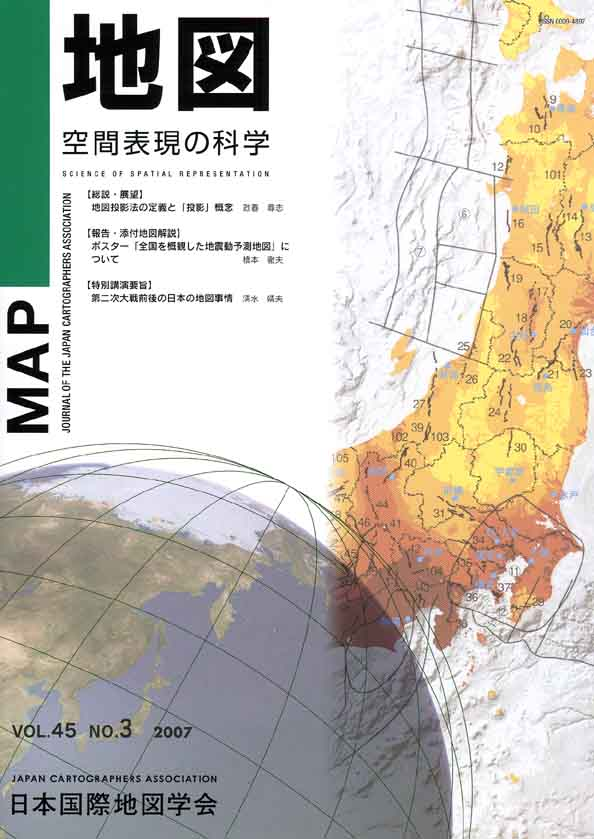
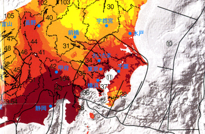
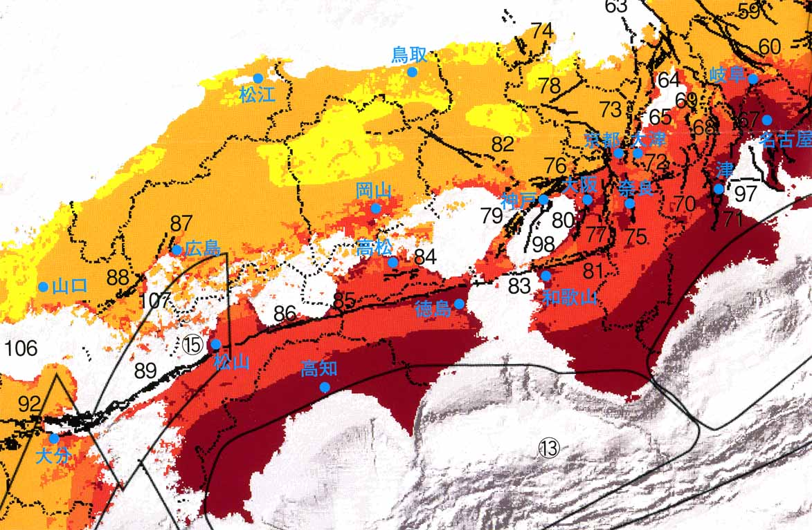

| 最 新 号 | バックナンバー | 添付地図目録 | 投 稿 規 程 |
Vol.45 No.3 （通巻１７９号） ２００７年
| 【総説・展望】 | 地図投影法の定義と「投影」概念 | 政春尋志 |
| キーワード：地図投影法、用語、地図教育、写像、プトレマイオス | ||
| 【報告・添付地図解説】 | ポスター「全国を概観した地震動予測地図」について | 橋本徹夫 |
| キーワード：確率論的地震動予測地図、震源断層を特定した地震動予測地図、長期評価、強震動評価、地震調査研究推進本部地震調査委員会 | ||
| 【特別講演要旨】 | 第二次大戦前後の日本の地図事情 | 清水靖夫 |
| キーワード：改描（戦時改描）、陸海編合図、集成五万分一地形図、陸海作戦用図、外邦図、応急版 | ||
| 【ニュース】 | 『新聞用語集』2007年版の「外国地名の書き方」 | 飯島通明 |
| 【発表要旨】 | 第181回例会 | |
| 【特別会員のページ】 | 社団法人 日本測量協会 | |
| ESRIジャパン株式会社 | ||
| 【学会記事】 | ||
| 【添付地図】 | 全国を概観した地震動予測地図 | |
|
≪No.45 No.3 表紙≫ |
|
|  |
|
|
|
≪No.45 No.3 添付地図−抜粋≫ |
| 
 本図を許可なく複製・利用することを禁止します。 |